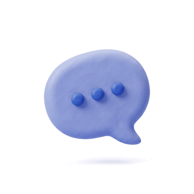
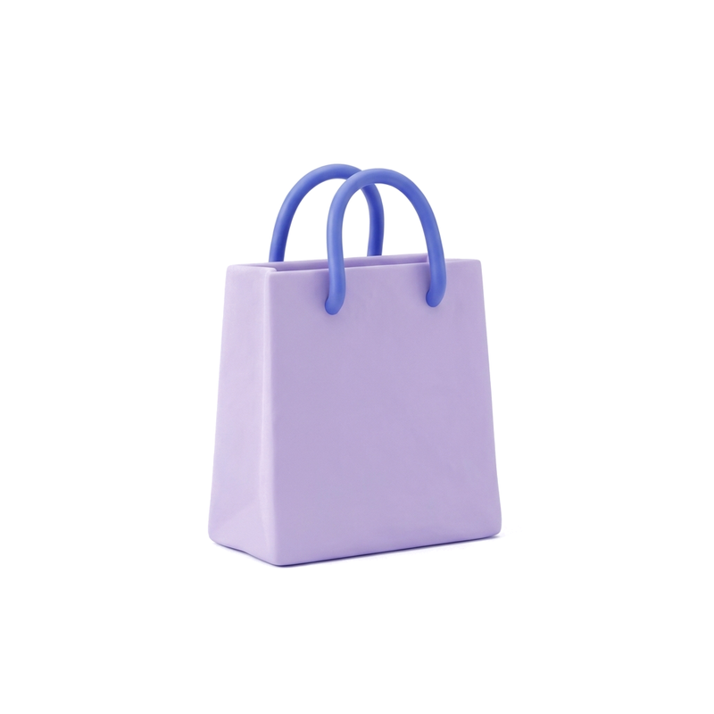
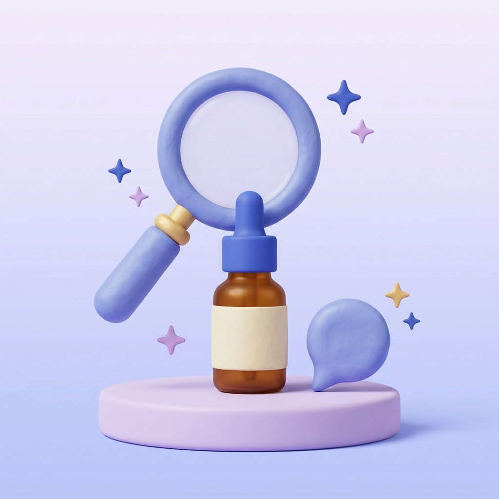
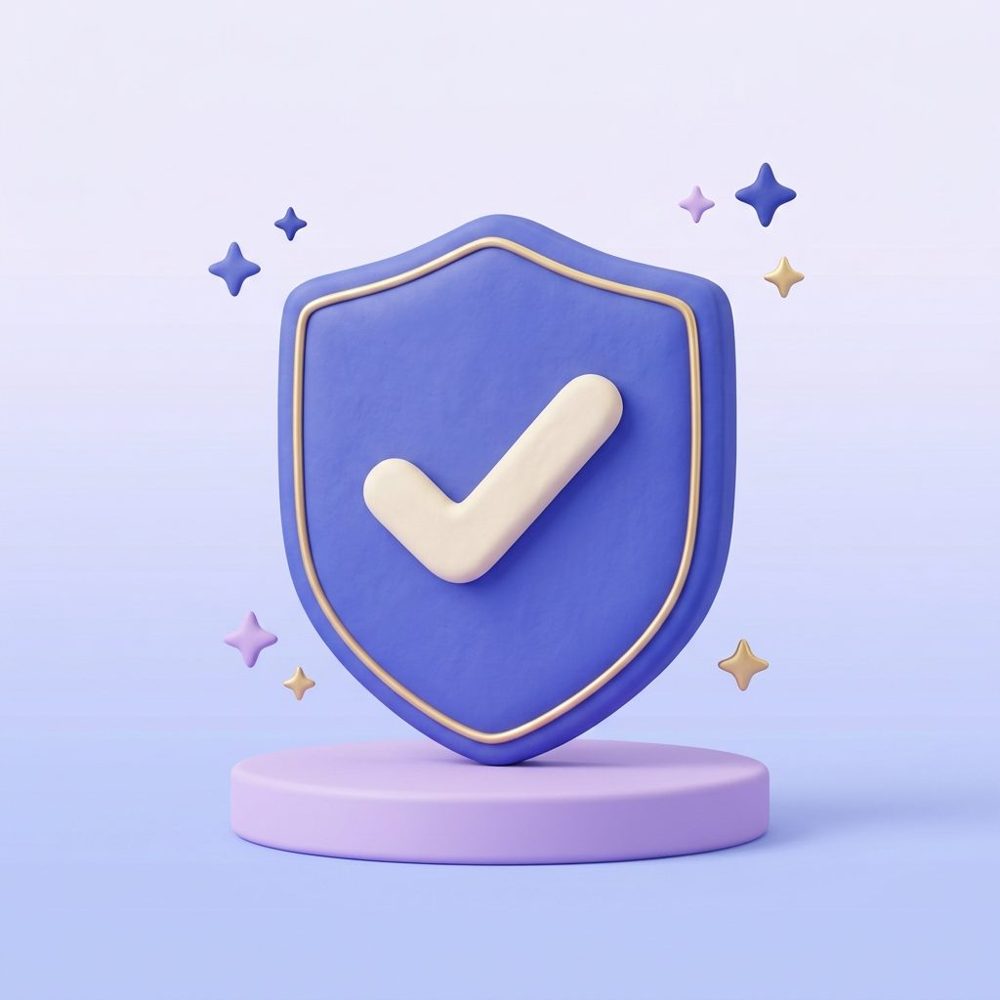
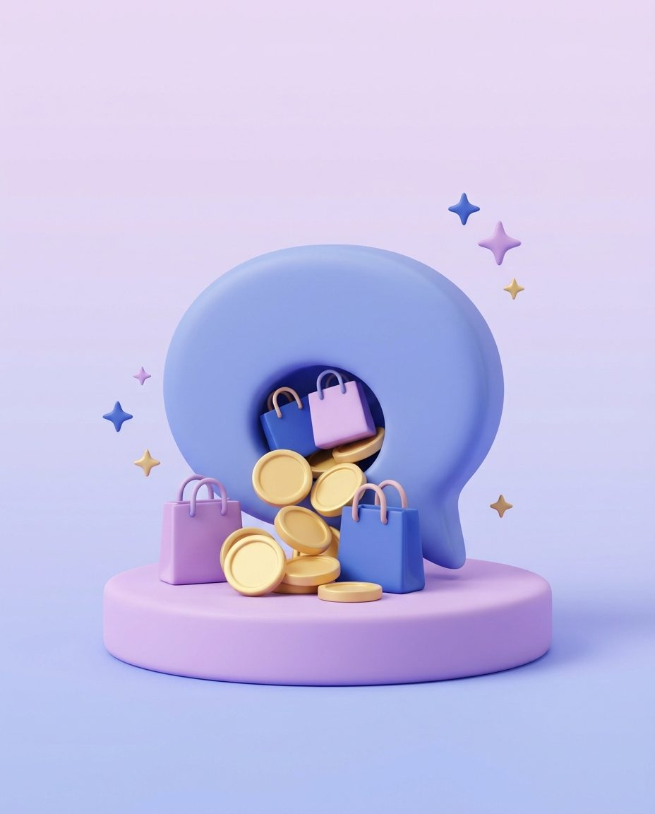

Free scan
$0one-time
After install: see where you stand.
Install and scan free- 10 buyer questions on 3 AI assistants
- Who AI recommends instead
- AI sales from your last 60 days
- No fixes or ongoing tracking
AU & NZ For Shopify stores
GEO helps ChatGPT & co recommend your products, then shows the sales you can trace back to AI.


They ask ChatGPT & co what to buy.
GEO helps make yours one of them.
No cost per click.
Checks the AI your shoppers ask, right inside Shopify
About 50 million
shopping questions a day on ChatGPT
Our 2025 estimate: 2.5B messages × 2.1% (OpenAI)
nearly60×
more orders from AI, Q4 2025 vs all of 2024
60%
higher conversion from AI visitors

We ask ChatGPT, Gemini and Perplexity your buyers’ questions every week.

GEO writes clearer product pages that AI can quote.

Orders, revenue and clicks from AI, against your starting point.
Change vs your starting point
How often AI names you
5 orders × $80 = $400 a month
GEO Core is US$49 a month. You decide what’s realistic for your store.
Billed in US dollars through Shopify. Cancel any time.
$0one-time
After install: see where you stand.
Install and scan freeUS$49a month · 7-day free trial
Track, fix and see the money.
Start 7-day trialUS$149a month
Everything in Core, for bigger catalogues.
Choose ProChatGPT usually adds utm_source=chatgpt.com to its links. We spot other AI visits too. Google AI Overviews can’t be cleanly separated.
AI repeats facts from product pages and quotes sites it trusts. GEO helps with both.
Not on ChatGPT. OpenAI says ads can’t shape its answers. Google does sell ads inside AI Overviews in Australia and New Zealand.
Sources: OpenAI and Google Ads Help.
No. Every change waits for your approval unless you turn on autopilot (Pro). Even then it skips risky changes, like product claims.
The product check, the free scan and the clicks AI sends you. GEO Core is US$49 a month after a 7-day free trial.
About five minutes. Install from Shopify and tick the questions you care about. Your first scan runs in the background.
Choose a question